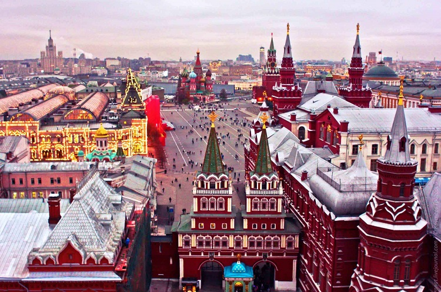

介绍
#地理位置及历史#
莫斯科（Moscow），是俄罗斯联邦首都、莫斯科州首府。莫斯科是俄罗斯的政治、经济、文化、金融、交通中心以及最大的综合性城市，是一座国际化大都市。

图：首都莫斯科
莫斯科地处俄罗斯欧洲部分中部、东欧平原中部，跨莫斯科河及支流亚乌扎河两岸。莫斯科和伏尔加流域的上游入口和江河口处相通，是俄罗斯乃至欧亚大陆上极其重要的交通枢纽，也是俄罗斯重要的工业制造业中心、科技、教育中心。
1147年，莫斯科沿莫斯科河而建，从莫斯科大公时代开始，到沙皇俄国至苏联及俄罗斯联邦一直担任着国家首都，迄今已有800余年的历史，是世界著名的古城。
#宗教#
俄罗斯主要宗教为东正教，其次为伊斯兰教。俄权威社会调查机构抽样调查结果显示，俄居民55%信奉宗教，其中 91％信奉东正教，5%信奉伊斯兰教，信奉天主教和犹太教的各为1％，0.8％信奉佛教，其余信奉其它宗教。
东正教，国际通称“正教会”或“东正教会”，官名“正统大公教会“，是基于正统派神学与东方礼拜仪式制度的基督教三大流派之一，也是强调自身正统性的宗徒继承教会。
#最佳出游时间#
5月、9月最佳。莫斯科气候属於湿润的大陆性气候。夏季比较湿润，有时炎热；冬季寒冷漫长。莫斯科的夏天不会达到“炎热”的程度，但有时日照强烈，要注意防晒。
#特色#
莫斯科拥有众多名胜古迹，是历史悠久的克里姆林宫所在地。莫斯科城市规划优美，掩映在一片绿海之中，故有“森林中的首都”之美誉。
时差
莫斯科所在的时区是东三区，北京时间比莫斯科快5小时。
公众假期及节庆
#公众假期#
| 公众假期 | 日期 |
| 新年元旦 | 1月1日 |
| 主降生日 | 1月7日 |
| 东正教洗礼节 | 1月19日 |
| 红军纪念日（卫国战士日） | 2月23日 |
| 五一劳动节 | 5月1日 |
| 报刊节 | 5月5日 |
| 卫国战争胜利纪念日 | 5月9日 |
| 俄罗斯独立日 | 6月12日 |
| 卫国战士纪念日 | 6月22日 |
| 团结日 | 11月4日 |
| 十月革命纪念日 | 11月7.8日 |
| 新宪法节 | 12月12日 |
| “俄罗斯之冬”联欢节 | 12月25日-1月10日 |
#谢肉节 （ 送冬节）#
谢肉节是传统节日里的大节。它在复活节前的第八周，为期七天。按照民间习俗，每一天都有所不同。在莫斯科，谢肉节有多天的庆祝活动。
第一天是迎春日；
第二天是娱乐日；
第三天是美食日；
第四天是醉酒日；
第五天是岳母晚会日 （ 岳母在这一天要宴请新婚的女婿 ） ；
第六天是小姑子相新嫂子日 （ 这天未婚女子要拜访未婚夫的姐妹们 ） ；
第七天是送冬和宽恕日 （ 人们互相串门，请求对方宽恕自己的言行 ） 。
#春耕节#
春耕节一般在每年积雪已经融化、春耕生产即将开始时举行。在春耕节里，古俄罗斯人习惯吃黑麦烤成的犁形和耙形面包。
春耕的第一天，莫斯科人穿着干净的衣服，带着面包、盐、鸡蛋下地。当犁好三条垄沟后，便拿出面包和盐，自己吃一些，其余的喂牛，之后把鸡蛋埋在土里，以祭祀大地，祈求这一年风调雨顺，五谷丰登。
#胜利节#
胜利节定在5月9日。这是原苏联时期，卫国战争胜利纪念日，是战胜德国法西斯的纪念节日。俄罗斯独立之后保留了这个节日，并改称为胜利节。每年这一天，莫斯科都要举行隆重的集会和阅兵式庆祝胜利。
#诗歌节#
6月6日是俄罗斯的诗歌节。这个节日是为了纪念俄罗斯的伟大诗人普希金而设的，因为他诞生在 1799 年的 6 月 6 日，他不仅闻名于俄罗斯，而且也闻名全世界。
他的著名作品如长篇叙事诗《叶甫根尼·奥涅金》、中篇小说《上尉的女儿》等深受广大读者的喜爱，俄罗斯人认为普希金是民族规范语言的奠基者。自 1880 年 6 月 6 日起，诗歌节也被称作普希金节，这天在普希金广场上竖起了普希金纪念碑，这是俄罗斯人为诗人而建的第一座纪念碑。
#桦树节#
6 月 24 日是俄罗斯人的桦树节，它原名夏节。这个节日的主角是白桦树。白桦树是俄罗斯的象征，堪称俄罗斯的“国树”。
桦树节的时候，在莫斯科的家家户户都用桦树枝、矢车菊、铃铛装饰房间。节日里还要举行联欢会，女主持人被称作’小白桦’，还有化装游行，游行队伍簇拥着桦树，真是处处有白桦树。
#复活节#
东正教最大的节日是复活节。复活节是东正教最古老、最突出的节日，是“节日中的节日”。它为纪念耶稣复活而设，在每年春分月圆后第一个星期日举行，一般在三月底四月初。这个节日来源于《圣经》中关于耶稣从死里复活的记载 。
在莫斯科的复活节前夕 ( 星期六晚上 ) ，人们在耶稣像前点起油灯，供上圆柱形的鸡蛋面包及染成各种颜色的鸡蛋。晚上教徒手持蜡烛和彩蛋到教堂门口排队。夜间 12 点正，圣门敞开，内有教士喊：“耶稣复活了 ! ”人们都跟着喊：“耶稣复活了 ! ”并且互相拥抱、接吻、交换彩蛋。
#三圣节#
三圣节在复活节后第50天，又称圣降灵节，是东正教中的一个重大节日，和斯拉夫人的悼亡节结合在一起，民族色彩浓重，流传很广，是俄罗斯民间最重要的夏季节日，最受青年人喜欢。
在莫斯科，节前，屋内外、院内外和街道上都收拾得干干净净、整整齐齐，家家房前都摆着桦树，室内也用桦树枝装饰起来。姑娘们成群结队到森林里去采集各种药草。
节日这天，青年们从教堂出来后，吃点儿饭，稍事休息，就聚集在一起到林中去编织花环、游戏、跳圆圈舞并把编好的花环挂到桦树上，放声高歌，然后各自回家。这是庆祝活动的第一部分，称为编花环。此外，要烧篝火，准备一定的菜肴，如鸡蛋、火腿、奶酪、酸奶以招待客人。